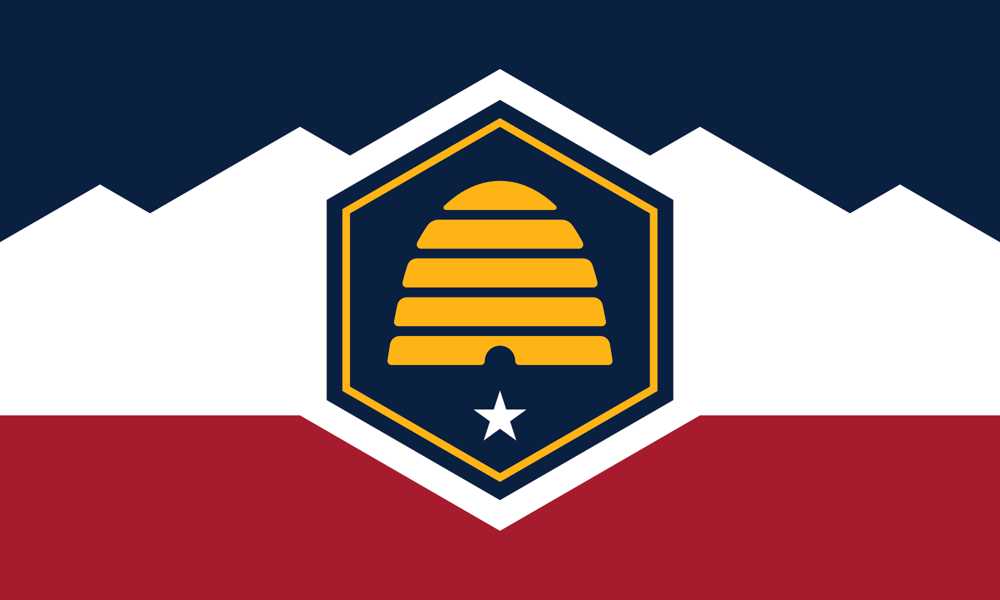

Caden Barnett Griffin
About Me
My name is Caden and I am studying software development. I am currently a full time student and live with my family in Utah. I love to spend time with family and friends.

Utah, USA

Utah is known for its incredible and diverse landscapes and outdoors, including multiple national parks. It is the 45th state of the United States and has a population of 3.5 million people.